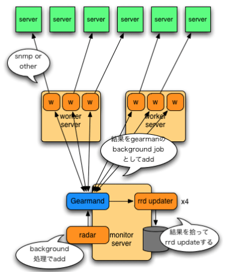
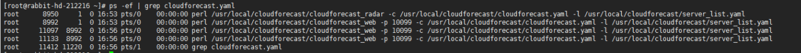
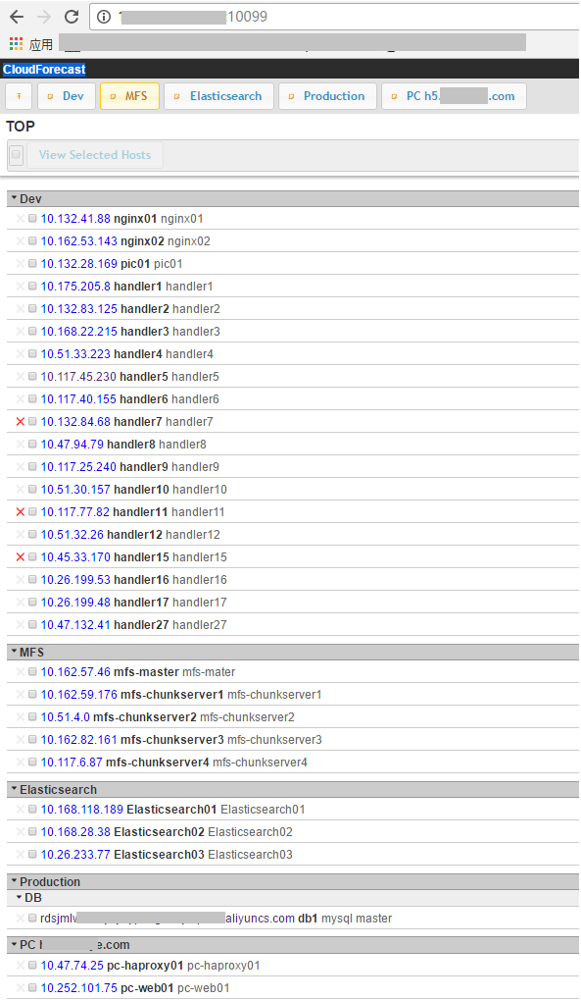

Cloudforecast
- TAGS: Linux
CloudForecast
CloudForecast 简介
CloudForecast 的是一个系统管理员的工具或监控的框架,以监测服务器和其它资源,作为内部是使用了 Perl 和 RRDtool 加 Gearman 的分布调度支持,设计的主要目录是为了管理监控小型和大型企业中的服务器.也很合适二次开发.
这个软件的架构如下。使用了gearman 来任务调度,所以可以无限增加监控机器.

git 的项目地址： http://github.com/kazeburo/cloudforecast
CloudForecast 安装
CloudForecast 相关依赖的安装：
在简短的介绍
安装这个软件前,需要 rrdtool 和 perl 还需要有 SNMP 的支持
# ubuntu 的安装 sudo apt-get install librrds-perl libsnmp-perl # CentOS 的安装 sudo yum install net-snmp-perl # rrdtool 的安装,需要使用 EPEL 的 rpm 扩展,见我另一个文章 yum 高级使用技巧 sudo yum install rrdtool-perl
CloudForecast 的安装
使用 git 下载这个项目的源码,在使用 cpanm 来安装依赖关系
$ git clone git://github.com/kazeburo/cloudforecast.git $ cd cloudforecast $ cpanm -l extlib --installdeps .
注：目录是本地目录,cpanm 安装到 extlib 目录,然后使用 local::lib 来加载进这个项目中的.
如果要监控 MySQL 的状态,这个模块是必须的 DBD::mysql.
配置CloudForecast
下面是配置文件，复制并编辑示例
配置文件
cp cloudforecast_sample.yaml cloudforecast.yaml
服务器列表文件
cp server_list_sample.yaml server_list.yaml
示例配置文件(cloudforecast_sample.yaml)
--- config: # 如果您使用 gearman ,需要在这指定 germand 主机名和端口 gearman_enable: 0 gearman_server: host: localhost port: 7003 # RRD 的存放地址. 如果使用 / 就使用绝对路径 data_dir: data #如data_dir: /usr/local/cloudforecast/rra # 监控配置文件条目 host_config_dir: host_config component_config: # SNMP 的一些设置 community 和 version 的信息 SNMP: community: public #snmp外部实用名字 version: 2 # MySQL 监控的用户和密码 MySQL: user: root password: ""
监控条目 [root@rabbit-hd-212216 cloudforecast]# ll host_config/ total 16 -rw-r--r-- 1 root root 473 Nov 6 2015 basic.yaml -rw-r--r-- 1 root root 95 Nov 6 2015 httpd8080.yaml -rw-r--r-- 1 root root 113 Nov 6 2015 httpd.yaml -rw-r--r-- 1 root root 75 Mar 22 2016 mysql.yaml [root@rabbit-hd-212216 cloudforecast]# cat host_config/basic.yaml --- # component_configはこの監視項目の設定内だけで利用されます。 # 部分的にSNMPのcommunity名が異なる場合などに利用できます # resourceには、監視項目を追加してきます。実際の監視内容は、CloudForecast::Data::Foo で定義 # されています。「:」で区切った値はオプションとして定義モジュールに渡されます component_config: resources: - traffic:eth0 - traffic:eth1 - basic [root@rabbit-hd-212216 cloudforecast]# cat host_config/httpd.yaml --- component_config: resources: - traffic:2:eth0 - traffic:3:eth1 - basic - http:80 - memcached:11211 [root@rabbit-hd-212216 cloudforecast]# cat host_config/mysql.yaml --- component_config: resources: #- traffic:2:eth0 - mysql - innodb
示例服务器列表文件(serverlistsample.yaml)
--- #Dev # --- #Hogeと書くことでサーバ一覧を区切ることができます # config 是指主机需要配置什么监测项目 # 主机的配置是“IP地址[空格]主机名[空格]备注“ servers: - config: basic.yaml hosts: - 192.168.55.10 dev1 develop - 192.168.55.11 dev2 develop servers: - config: httpd.yaml label: DB #小标题 hosts: - 192.168.51.10 web1 web memcached - 192.168.51.11 web2 web memcached - config: mysql.yaml hosts: - 192.168.51.60 db1 mysql master - 192.168.51.61 db2 mysql slave - 192.168.51.62 db2 mysql slave - config: basic.yaml hosts: - 192.168.51.90 batch1 batch servers: - config: basic.yaml hosts: - 192.168.55.10 dev1 develop - 192.168.55.11 dev2 develop --- #Production 名子可随意填写 servers: - config: httpd.yaml label: DB #小标题 hosts: - 192.168.51.10 web1 web memcached - 192.168.51.11 web2 web memcached - config: mysql.yaml hosts: - 192.168.51.60 db1 mysql master - 192.168.51.61 db2 mysql slave - 192.168.51.62 db2 mysql slave - config: basic.yaml hosts: - 192.168.51.90 batch1 batch
启动CloudForecast
守护进程.对远程的资源和数据进行检索 每5分钟一次
./cloudforecast_radar -c cloudforecast.yaml -l server_list.yaml
Web 显示用的服务器 5000 的端口
./cloudforecast_web -p 5000 -c cloudforecast.yaml -l server_list.yaml
深入 CloudForecast
CloudForecast 由RRDTool工具包装而成、被设计作为信息检索的框架.
CloudForecast 一共有四个大的部分.
- 一个不断循环守护进程
- HTTPD 用来显示信息
- Gearman 的 worker 采集的信息
- Gearman 的 进行 RRD文件的更新工作
在比较小的规模的时候 ,可以不使用 Gearman 就能达到性能的要求,如果你想看看架构图,可以看这个 blog 上的显示的这个
1. 不断循环守护进程
$ ./cloudforecast_radar -r -c cloudforecast.yaml -l server_list.yaml
从启动开始每5分钟更新一次
- -r 重新启动选项,重新启动时自动更新配置文件和库
- -c 配置文件
- -l 服务器列表
2. web server
$ ./cloudforecast_web -r -p 5000 -c cloudforecast.yaml -l server_list.yaml
查看图表,通过类 HTTPD
- -p 指定 httpd 的 port
- -o | -host httpd 的 Listen 主机 IP.默认为本机所有 IP
- –allow-from 客户端IP/被访问的IP段,您可以指定多个 192.168.0.1 or 192.168.0.1/24 如果你不指定,就是不控制任何访问
- –front-proxy 如果您前面使用的是反向代理,您可以指定多个,IP地址/ IP段.
3. 采集远程 snmp 的信息,通过 Gearman 来调度
$ ./cf_fetcher_worker -r -c cloudforecast.yaml -max-workers 2 -max-request-per-child 100 -max-exection-time 60
geamarn 调度 worker 进行远程信息检索采集
- -max-worker prefork 多少个 worker 同来
- -max-request-per-child 在处理时间的这个工作进程.如果处理的任务超过了这个数,这个进程重新启动
- -max-exection-time 如果你的 worker 超时,停止掉 worker
4. Gearman 调度 worker进行 RRD 的文件更新
$ ./cf_updater_worker -r -c cloudforecast.yaml -max-workers 2 -max-request-per-child 100 -max-exection-time 60
Gearman 让 worker 对 RRD 文件写入信息
环境变量 CF_DEBUG=1 当这个成立时.输出调试日志
范例

[root@rabbit-hd-212216 ~]# cat /usr/local/cloudforecast/cloudforecast.yaml --- config: # gearmanを利用する?合、enableを1にして、germandのhost名とportを指定します gearman_enable: 0 gearman_server: host: localhost port: 7003 # rrdのファイルを?置する?所。「/」から始まると??パスとなります data_dir: /usr/local/cloudforecast/rra # ???目の?定ファイルを?置するディレクトリ。「/」から始まると??パス host_config_dir: host_config component_config: # SNMPでデ?タを取得する?のオプション。communityとversion SNMP: community: public version: 2 # MySQLを??する?合のuser名とパスワ?ド MySQL: user: sql_read1 password: "hd^R+O%ZU(5@oy#E" [root@rabbit-hd-212216 ~]# cat /usr/local/cloudforecast/server_list.yaml --- #Dev # --- #Hogeと書くことでサーバ一覧を区切ることができます # configはhost_config内の監視項目の設定ファイル名 # hostsは 「IPアドレス[space]ホスト名[space]コメント」です。コメント内にはスペースがあってもかまいません servers: - config: basic.yaml hosts: - 10.132.41.88 nginx01 nginx01 - 10.162.53.143 nginx02 nginx02 - 10.132.28.169 pic01 pic01 - 10.175.205.8 handler1 handler1 - 10.132.83.125 handler2 handler2 - 10.168.22.215 handler3 handler3 - 10.51.33.223 handler4 handler4 - 10.117.45.230 handler5 handler5 - 10.117.40.155 handler6 handler6 - 10.132.84.68 handler7 handler7 - 10.47.94.79 handler8 handler8 - 10.117.25.240 handler9 handler9 - 10.51.30.157 handler10 handler10 - 10.117.77.82 handler11 handler11 - 10.51.32.26 handler12 handler12 - 10.45.33.170 handler15 handler15 - 10.26.199.53 handler16 handler16 - 10.26.199.48 handler17 handler17 - 10.47.132.41 handler27 handler27 #- 10.252.101.75 hdweb hdweb --- #MFS servers: - config: basic.yaml hosts: - 10.162.57.46 mfs-master mfs-mater - 10.162.59.176 mfs-chunkserver1 mfs-chunkserver1 - 10.51.4.0 mfs-chunkserver2 mfs-chunkserver2 - 10.162.82.161 mfs-chunkserver3 mfs-chunkserver3 - 10.117.6.87 mfs-chunkserver4 mfs-chunkserver4 --- #Elasticsearch servers: - config: basic.yaml hosts: - 10.168.118.189 Elasticsearch01 Elasticsearch01 - 10.168.28.38 Elasticsearch02 Elasticsearch02 - 10.26.233.77 Elasticsearch03 Elasticsearch03 --- #Production servers: # - config: httpd.yaml # label: Application Servers # hosts: # - 192.168.51.10 web1 web memcached # - 192.168.51.11 web2 web memcached # - config: httpd8080.yaml # hosts: # - 192.168.51.12 web3 mobile web # - 192.168.51.13 web4 mobile web - config: mysql.yaml label: DB hosts: - rdsjmlwvb.mysql.rds.aliyuncs.com db1 mysql master # - 192.168.51.61 db2 mysql slave # - 192.168.51.62 db2 mysql slave # - config: basic.yaml # label: ETC # hosts: # - 192.168.51.90 batch1 batch --- #PC h5.cici.com servers: - config: basic.yaml hosts: - 10.47.74.25 pc-haproxy01 pc-haproxy01 - 10.252.101.75 pc-web01 pc-web01 - 10.168.68.175 pc-web02 pc-web02 - 10.24.255.220 pc-mysql01 pc-mysql01 [root@rabbit-hd-212216 ~]# cat /usr/local/cloudforecast/host_config/basic.yaml --- # component_configはこの監視項目の設定内だけで利用されます。 # 部分的にSNMPのcommunity名が異なる場合などに利用できます # resourceには、監視項目を追加してきます。実際の監視内容は、CloudForecast::Data::Foo で定義 # されています。「:」で区切った値はオプションとして定義モジュールに渡されます component_config: resources: - traffic:eth0 - traffic:eth1 - basic [root@rabbit-hd-212216 ~]# cat /usr/local/cloudforecast/host_config/httpd8080.yaml --- component_config: resources: - traffic:2:eth0 - traffic:3:eth1 - basic - http:8080 [root@rabbit-hd-212216 ~]# cat /usr/local/cloudforecast/host_config/httpd.yaml --- component_config: resources: - traffic:2:eth0 - traffic:3:eth1 - basic - http:80 - memcached:11211 [root@rabbit-hd-212216 ~]# cat /usr/local/cloudforecast/host_config/mysql.yaml --- component_config: resources: #- traffic:2:eth0 - mysql - innodb

snmp 安装
yum list all | grep snmp yum install net-snmp.x86_64 -y cd /etc/snmp/ cp snmpd.conf snmpd.conf.bak cat snmpd.conf.bak |grep -vE '^$|^#' > snmpd.conf
配合使用cloudforse 的snmpd.conf配置
[root@datanode03 snmp]# vim snmpd.conf #第一步，定义安全体名称，将一个共同体映射到一个安全体名称里： #com2sec 是net-snmp中定义安全体名字的关键字，表示这一行定义一个安全体名字。 #sec.name： 安全体名称 #source：可以访问的ip地址范围，默认值"default”，即任何ip都可以访问。 #community：共同体名称 # # sec.name souce community com2sec cici 10.161.212.216 public com2sec cici 114.215.191.163 public com2sec cici 10.161.171.134 public #第二步，定义安全组，将安全体名称加进一个安全组中 #groupName 安全组名称 #securityModel 安全模型，可选值：v1，v2c，usm #securityName 安全体名称 # # groupName securityModel securityName group ciciGroup v1 cici group ciciGroup v2c cici #第三步，定义视图，供安全组使用 #view.name 视图名 #incl/excl 对下面的MIB子树是包括还是排除(included/excluded) #subtree 视图中所涉及的mib子树 #mask(optional) 掩码 # view.name incl/excl subtree [mask] view systemview included .1.3.6.1.2.1.1 view systemview included .1.3.6.1.2.1.25.1.1 view systemview included .1.3.6.1.2.1.2 view all included .1 80 #第四步，向安全组授权相应的视图 #group 安全组名 #context 上下文v1，v2中始终为空 #sec.model 安全模型，可选值：v1，v2，usm #sec.level 安全级别 可选值：auth,noauth,priv, v1,v2c中只能为noauth #prefix 前缀。指定context如何与PDU中的context匹配，V3使用 #read 授权的读视图 #write 授权的写视图 #notif 授权的trap视图 # group context sec.model sec.level prefix read write notif access ciciGroup "" any noauth exact all none none view all included .1 syslocation Unknown (edit /etc/snmp/snmpd.conf) syscontact Root <root@localhost> (configure /etc/snmp/snmp.local.conf) dontLogTCPWrappersConnects yes [root@datanode03 snmp]# systemctl start snmpd